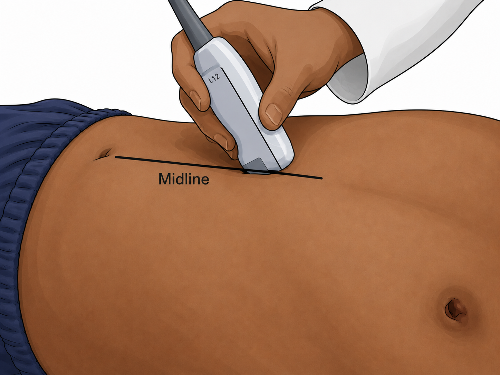
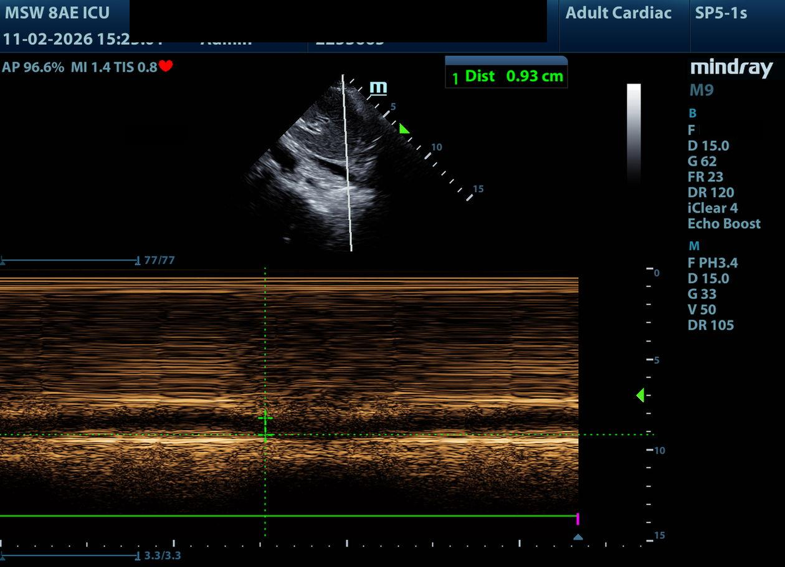
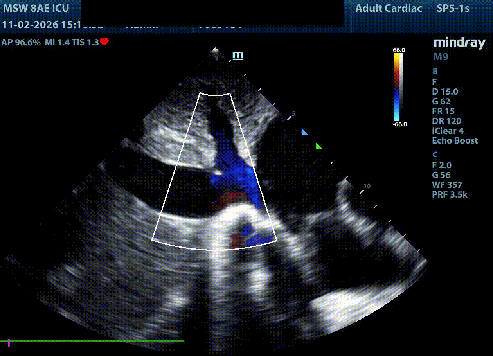
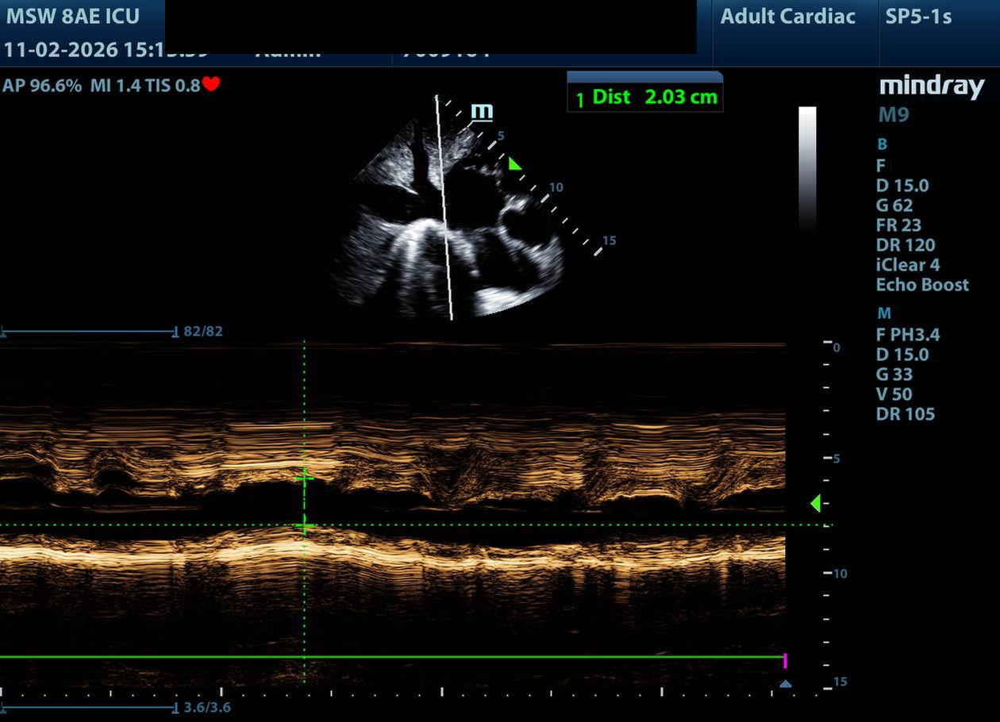
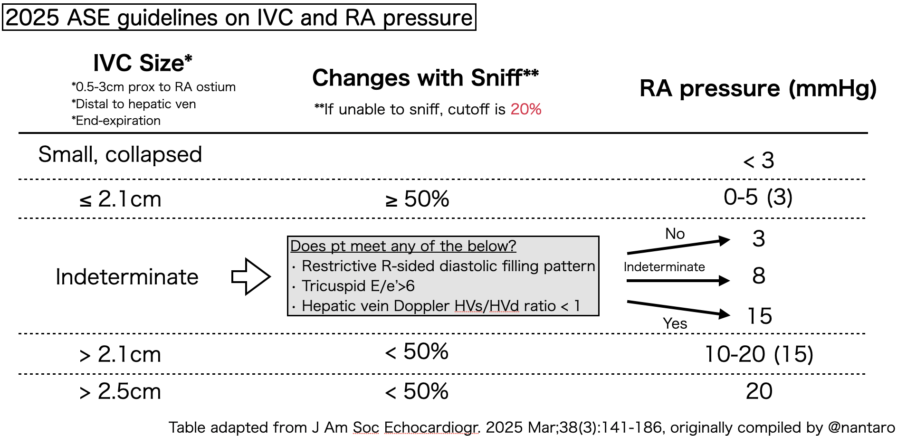

Why IVC?
A quick recap before we dive into the technique — what IVC tells us, and what it doesn't.
IVC size and respiratory variation reflect right atrial pressure and venous return. A small, collapsing IVC suggests preload reserve — meaning the heart is likely on the steep part of the Frank-Starling curve, and a fluid bolus should increase cardiac output.
Up next
We'll cover how to measure IVC reliably, the cutoffs that guide fluid decisions, and the ASE 2025 update for estimating RA pressure.
How to Measure IVC
A reproducible measurement starts with the right probe, window, and use of M-mode.
Probe: Cardiac (phased-array)
Window: Subxiphoid
Technique: Place slightly right of midline, then rock cephalad to bring the IVC into long-axis view as it enters the right atrium.

Once you have a stable long-axis view, drop M-mode through the IVC about 1–2 cm from the RA junction. M-mode captures the maximum and minimum diameters across the respiratory cycle far more reliably than eyeballing the 2D loop.


Small, highly variable diameter — suggests fluid responsiveness.


Dilated, minimal variation — suggests high RA pressure / fluid intolerance.
A Brief History of IVC for Fluid Assessment
Four studies that shaped how we use IVC at the bedside today.
ΔIVC ≥ 12% → Positive Predictive Value 92%, Negative Predictive Value 93% for fluid responsiveness.
First major study establishing IVC variation as a predictor in ventilated patients.
ΔIVC ≥ 40% → Sensitivity 70%, Specificity 80% for fluid responsiveness.
Extended the concept beyond the ventilated ICU population.
• Fill if IVC < 1 cm (Sensitivity ~90%)
• Don't fill if IVC > 2.5 cm (Sensitivity 80–90%)
Based on data from mechanically ventilated patients (Intensive Care Med 2018;44:197-203).
Overall: Sensitivity 0.84 / Specificity 0.87
Mechanically ventilated: cutoff ΔIVC 16.5% (range 10.2–28) → Sensitivity 0.79 / Specificity 0.82
Spontaneously breathing: cutoff ΔIVC 35% (range 12.9–48) → Sensitivity 0.92 / Specificity 0.93
Ideal patient selection: tidal volume ≤ 8 mL/kg, PEEP ≤ 5 cmH₂O.
The four cutoffs on the next slide come from synthesizing these findings.
IVC Cutoffs — The Bottom Line
Synthesizing the evidence into a practical bedside rule.
In mechanically ventilated patients, ideal interpretation requires tidal volume ≤ 8 mL/kg and PEEP ≤ 5 cmH₂O.
ASE 2025 — Estimating RA Pressure from IVC
The American Society of Echocardiography has updated how we estimate right atrial pressure from IVC findings.
The classic ASE framework placed RA pressure into three categories based on IVC diameter (cutoff 2.1 cm) and collapsibility (cutoff 50%):
- Low — IVC ≤ 2.1 cm + collapsibility > 50% → ~3 mmHg (range 0–5)
- Intermediate — one criterion met → ~8 mmHg (range 5–10)
- High — IVC > 2.1 cm + collapsibility < 50% → ~15 mmHg (range 10–20)
The ASE 2025 update revises this approach to improve accuracy — particularly in indeterminate cases — by incorporating additional sonographic signs (see image below).

ASE 2025 algorithm for IVC-based RA pressure estimation.
The exact algorithm is too detailed for bedside recall — save this image as a reference and consult it when you need a precise RA pressure estimate.
For volume assessment, the cutoffs from the previous slide remain the practical bedside rule.
Score:
You scored ≤ 50%. Would you like to review the content slides, or retake the quiz now?
Key Concepts — Module 2
A quick-reference recap of the IVC evaluation rules.
- IVC evaluation is most helpful for assessing fluid responsiveness
- Fill if IVC < 1 cm · Don't fill if IVC > 2.5 cm
-
For IVC 1–2.5 cm, assess collapsibility:
- Spontaneously breathing: ≥ 35% (~1/3)
- Mechanically ventilated: ≥ 16.5% (~1/5)
- ASE 2025 updated guidelines for RA pressure estimation from IVC
Pressure ≠ Volume. A dilated IVC reflects high RA pressure — but that pressure may come from RV dysfunction, tension pneumothorax, or tamponade, not volume overload. Rule these out before trusting IVC alone.
Coming up next
Module 3 will cover the VExUS protocol — assessing fluid tolerance through hepatic, portal, and renal vein Doppler.